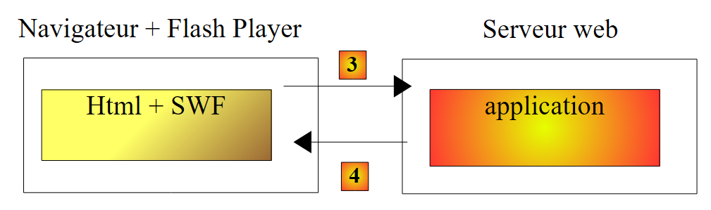
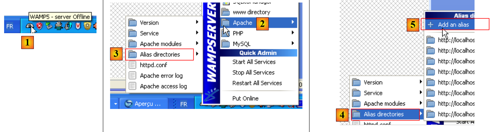
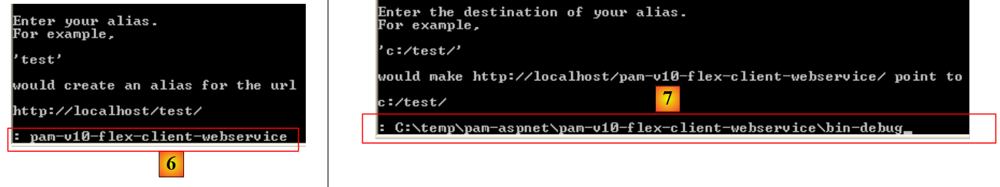
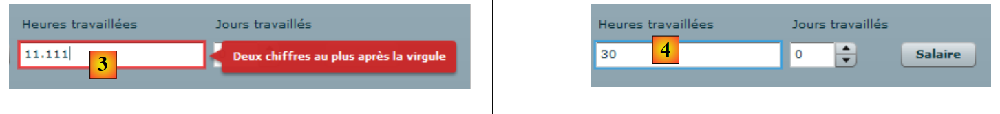

14. L'application [SimuPaie] – version 10 – client Flex d'un service web ASP.NET
Nous présentons maintenant un client Flex du service web ASP.NET de la version 5. L'IDE utilisé est Flex Builder 3. Une version de démonstration de ce produit est téléchargeable à l'URL [https://www.adobe.com/cfusion/tdrc/index.cfm?loc=fr_fr&product=flex]. Flex Builder 3 est un IDE Eclipse. Par ailleurs, pour exécuter le client Flex, nous utilisons un serveur web Apache de l'outil Wamp [http://www.wampserver.com/]. N'importe quel serveur Apache fait l'affaire. Le navigateur qui affiche le client Flex doit disposer du plugin Flash Player version 9 minimale.
Les applications Flex ont la particularité de s'exécuter au sein du plugin Flash Player du navigateur. En cela elles se rapprochent des applications Ajax qui embarquent dans les pages envoyées au navigateur des scripts JavaScript qui sont ensuite exécutés au sein du navigateur. Une application Flex n'est pas une application web au sens où on l'entend habituellement : c'est une application cliente de services délivrés par des serveurs web. En cela, elle est analogue à une application de bureau qui serait cliente de ces mêmes services. Elle diffère cependant en un point : elle est téléchargée initialement depuis un serveur web au sein d'un navigateur disposant du plugin Flash Player capable de l'exécuter.
Comme une application de bureau, une application Flex est composée principalement de deux éléments :
- une partie présentation : les vues affichées dans le navigateur. Ces vues ont la richesse des fenêtres des applications de bureau. Une vue est décrite à l'aide d'un langage à balises appelé MXML.
- une partie code qui gère principalement les événements provoqués par les actions de l'utilisateur sur la vue. Ce code peut être écrit également en MXML ou avec un langage orienté objet appelé ActionScript. Il faut distinguer deux types d'événements :
- l'événement qui nécessite d'avoir un échange avec le serveur web : remplissage d'une liste par des données fournies par une application web, envoi des données d'un formulaire au serveur, ... Flex fournit un certain nombre de méthodes pour communiquer avec le serveur de façon transparente pour le développeur. Ces méthodes sont par défaut asynchrones : l'utilisateur peut continuer à interagir avec la vue pendant la requête au serveur.
- l'événement qui modifie la vue affichée sans échange de données avec le serveur, par exemple tirer un élément d'un arbre pour le déposer dans une liste. Ce type d'événement est entièrement traité localement au sein du navigateur.
Une application Flex est souvent exécutée de la façon suivante :
 |
- en [1], une page HTML est demandée
- en [2], elle est envoyée. Elle embarque avec elle un fichier binaire SWF (ShockWave Flash) contenant l'intégralité de l'application Flex : toutes les vues et le code de gestion des événements de celles-ci. Ce fichier sera exécuté par le plugin Flash Player du navigateur.
 |
- l'exécution du client Flex se fait en local sur le navigateur sauf lorsqu'il a besoin de données externes. Dans ce cas, il les demande au serveur [3]. Il les reçoit en [4] selon des formats divers : XML ou binaire. L'application interrogée sur le serveur web peut être écrite dans un langage quelconque. Seul compte le format de la réponse.
Nous avons décrit l'architecture d'exécution d'une application Flex afin que le lecteur perçoive la différence entre celle-ci et celle d'une application Web classique, où les pages n'embarquent pas de code (Javascript, Flex, Silverlight, ...) que le navigateur exécuterait. Dans cette dernière, le navigateur est passif : il affiche simplement des pages HTML construites sur le serveur web qui les lui envoie.
14.1. Architecture de l'application client / serveur
L'architecture client / serveur mise en place est analogue à celles des versions 6 et 8 :
 |
En [1], la couche web ASP.NET est remplacée par une couche web Flex écrite en MXML et ActionScript. Le client [C] sera généré par l'IDE Flex Builder. Il faut rappeler ici que cette architecture comporte deux serveurs web non représentés :
- un serveur web ASP.NET qui exécute le service web [S]
- un serveur web APACHE qui exécute le client web [1]
14.2. Le projet Flex 3 du client
Nous construisons le client Flex avec l'IDE Flex Builder 3 :
 |
- dans Flex Builder 3, on crée un nouveau projet en [1]
- on lui donne un nom en [2] et on précise en [3] dans quel dossier le générer
 |
- en [4], on donne un nom à l'application principale (celle qui va être exécutée)
- en [5], le projet une fois généré
- en [6], le fichier MXML principal de l'application
- un fichier MXML comporte une vue et le code de gestion des événements de celle-ci. L'onglet [Source] [7] donne accès au fichier MXML. On y trouvera des balises <mx> décrivant la vue ainsi que du code ActionScript.
- la vue peut être construite graphiquement en utilisant l'onglet [Design] [8]. Les balises MXML décrivant la vue sont alors générées automatiquement dans l'onglet [Source]. L'inverse est vrai : les balises MXML ajoutées directement dans l'onglet [Source] sont reflétées graphiquement dans l'onglet [Design].
14.3. La vue n° 1
Nous allons construire progressivement une interface web analogue à celle de la version 1 (cf paragraphe 4). Nous construisons tout d'abord l'interface suivante :
 |
- en [1], la vue lorsque la connexion au service web a pu se faire. Le combo des employés est alors rempli.
- en [2], la vue lorsque la connexion au service web n'a pu se faire. Un message d'erreur est alors affiché.
Le fichier principal [main.xml] du client est le suivant :
<?xml version="1.0" encoding="utf-8"?>
<mx:Application xmlns:mx="http://www.adobe.com/2006/mxml" layout="vertical"
creationComplete="init()">
<mx:VBox width="100%">
<mx:Label text="Feuille de salaire" fontSize="30"/>
<mx:HBox>
<mx:VBox>
<mx:Label text="Employés"/>
<mx:ComboBox id="cmbEmployes" dataProvider="{employes}" labelFunction="displayEmploye"/>
</mx:VBox>
<mx:VBox>
<mx:Label text="Heures travaillées"/>
<mx:TextInput id="txtHeuresTravaillees"/>
</mx:VBox>
<mx:VBox>
<mx:Label text="Jours travaillés"/>
<mx:NumericStepper id="joursTravailles" minimum="0" maximum="31" stepSize="1"/>
</mx:VBox>
<mx:VBox>
<mx:Label text=""/>
<mx:Button id="btnSalaire" label="Salaire"/>
</mx:VBox>
</mx:HBox>
<mx:TextArea id="msg" minWidth="400" minHeight="100" editable="false" visible="true" enabled="true" horizontalScrollPolicy="auto" verticalScrollPolicy="auto" x="0" y="0" maxHeight="100" maxWidth="400"/>
</mx:VBox>
<mx:WebService ...>
...
</mx:WebService>
<mx:Script>
<![CDATA[
...
// données
[Bindable]
private var employes : ArrayCollection;
private function init():void{
...
}
]]>
</mx:Script>
</mx:Application>
Dans ce code, il faut distinguer diverses choses :
- la définition de l'application (lignes 2-3)
- la description de la vue de celle-ci (lignes 4-25)
- les gestionnaires d'événements en langage ActionScript au sein de la balise <mx:Script> (lignes 31-42).
- la définition du service web distant (lignes 27-29)
Commentons pour commencer, la définition de l'application elle-même et la description de sa vue :
- lignes 2-3 : définissent :
- le mode de disposition des composants dans le conteneur de la vue. L'attribut layout="vertical" indique que les composants seront les uns sous les autres.
- la méthode à exécuter lorsque la vue aura été instanciée, c.a.d. le moment où tous ses composants auront été instanciés. L'attribut creationComplete="init();" indique que c'est la méthode init de la ligne 38 qui doit être exécutée. creationComplete est l'un des événements que peut émettre la classe Application.
- les lignes 4-25 définissent les composants de la vue
- lignes 4-25 : un conteneur vertical : les composants y seront placés les uns sous les autres
- ligne 5 : définit un texte
- lignes 6-23 : un conteneur horizontal : les composants seront placés horizontalement dans celui-ci.
- lignes 7-10 : un conteneur vertical qui contiendra un texte et une liste déroulante
- ligne 8 : le texte
- ligne 9 : la liste déroulante dans laquelle on mettra la liste des employés. La balise dataProvider="{employes}" indique la source des données qui doivent remplir la liste. Ici, la liste sera remplie avec l'objet employes défini ligne 36. Pour pouvoir écrire dataProvider="{employes}", il faut que le champ employes ait l'attribut [Bindable] (ligne 35). Cet attribut permet à une variable ActionScript d'être référencée à l'extérieur de la balise <mx:Script>. Le champ employes est de type ArrayCollection, un type ActionScript qui permet de stocker des listes d'objets, ici une liste d'objets de type Employe.
- lignes 11-14 : un conteneur vertical qui contiendra un texte et une zone de saisie
- ligne 12 : le texte
- ligne 13 : la zone de saisie des heures travaillées.
- lignes 15-18 : un conteneur vertical qui contiendra un texte et un incrémenteur
- ligne 16 : le texte
- ligne 17 : l'incrémenteur qui permettra la saisie des jours travaillés.
- lignes 19-22 : un conteneur vertical qui contiendra un texte et un bouton qui déclenchera le calcul du salaire de la personne sélectionnée dans le combo.
- ligne 20 : le texte
- ligne 21 : le bouton.
- ligne 23 : fin du conteneur horizontal commencé ligne 6
- ligne 24 : une zone de texte dans un composant de type TextArea. Il affichera les messages d'erreur.
- ligne 25 : fin du conteneur vertical commencé ligne 4
Les lignes 4-25 génèrent la vue suivante dans l'onglet [Design] :
 |
- [1] : a été généré par le composant Label de la ligne 5
- [2] : a été généré par le composant ComboBox de la ligne 9
- [3] : a été généré par le composant TextInput de la ligne 13
- [4] : a été généré par le composant NumericStepper de la ligne 17
- [5] : a été généré par le composant Button de la ligne 21
- [6] : a été généré par le composant TextArea de la ligne 24
Examinons maintenant la déclaration du service web distant :
<mx:WebService id="pam"
wsdl="http://localhost:1077/Service1.asmx?WSDL"
fault="wsFault(event);"
showBusyCursor="true">
<mx:operation
name="GetAllIdentitesEmployes"
result="loadEmployesCompleted(event)"
fault="loadEmployesFault(event);">
<mx:request/>
</mx:operation>
</mx:WebService>
- ligne 1 : le service web est un composant d'identifiant pam (attribut id)
- ligne 2 : l'URI du fichier WSDL du service web (cf paragraphe 9.2)
- ligne 3 : la méthode à exécuter en cas d'erreur lors des échanges avec le service web : la méthode wsFault.
- ligne 4 : demande à ce qu'un indicateur soit affiché pour montrer à l'utilisateur qu'un échange avec le service web est en cours.
- lignes 5-10 : l'une des opérations offertes par le service web distant. Ici, la méthode GetAllIdentitesEmployes.
- ligne 7 : la méthode à exécuter lorsque l'appel de cette méthode se termine normalement, c.a.d. lorsque le service web renvoie bien la liste des employés
- ligne 8 : la méthode à exécuter lorsque l'appel de cette méthode se termine sur une erreur.
- ligne 9 : les paramètres de l'opération GetAllIdentitesEmployes. On sait que cette méthode n'attend pas de paramètres. Aussi laisse-t-on la balise <mx:request> vide.
Examinons maintenant le code ActionScript lié au service web :
<mx:Script>
<![CDATA[
import mx.rpc.events.FaultEvent;
import mx.collections.ArrayCollection;
import mx.rpc.events.ResultEvent;
// données
[Bindable]
private var employes : ArrayCollection;
private function init():void{
// on note les coordonnées de la zone de message
msgHeight=msg.height;
msgWidth=msg.width;
// on cache la zone de message
hideMsg();
// requête au service web distant pour avoir la liste simplifiée des employés
pam.GetAllIdentitesEmployes.send();
}
private function wsFault(event:Event):void{
// on signale l'erreur
msg.text="Service distant indisponible";
showMsg();
}
private function loadEmployesCompleted(event:ResultEvent):void{
// remplissage combo des employés
employes=event.result as ArrayCollection;
}
private function displayEmploye(employe:Object):String{
// identité d'un employé
return employe.Prenom + " " + employe.Nom;
}
private function loadEmployesFault(event:FaultEvent):void{
// affichage msg d'erreur
msg.text=event.fault.message;
// formulaire
showMsg();
}
// gestion des blocs
private var msgWidth:int;
private var msgHeight:int;
private function hideMsg():void{
msg.height=0;
msg.width=0;
}
private function showMsg():void{
msg.height=msgHeight;
msg.width=msgWidth;
}
]]>
</mx:Script>
- ligne 11 : la méthode init est exécutée au démarrage de l'application parce qu'on a écrit :
<mx:Application xmlns:mx="http://www.adobe.com/2006/mxml" layout="vertical"
creationComplete="init()">
- lignes 13-14 : on mémorise les hauteur et largeur de la zone de message. On utilise deux méthodes hideMsg (lignes 48-51) et showMsg (lignes 53-56) pour respectivement cacher / montrer la zone de message selon qu'il y a eu erreur ou non. La méthode hideMsg cache la zone de message en mettant ses hauteur / largeur à 0. La méthode showMsg affiche la zone de message en lui restituant ses hauteur / largeur mémorisées dans la méthode init.
- ligne 16 : on cache la zone de message. Au départ, il n'y a pas d'erreur.
- ligne 18 : la méthode GetAllIdentitesEmploye (ligne 6 du service web) du service web pam (ligne 1 du service web) est appelée. L'appel est asynchrone. La ligne 7 du service web indique que la méthode loadEmployesCompleted sera exécutée si cet appel asynchrone se termine bien. La ligne 8 du service web indique que la méthode loadEmployesFault sera exécutée si cet appel asynchrone se termine mal.
- ligne 27 : la méthode loadEmployesCompleted qui est exécutée si l'appel au service web de la ligne 18 se termine bien.
- ligne 29 : on sait que le service web renvoie une réponse XML. Il est bon de revenir à celle-ci pour comprendre le code ActionScript :
 |
- en [1], page du service web [Service.asmx]
- en [2], le lien vers la page de test de la méthode [GetAllIdentitesEmployes]
- en [3], le test est fait. Aucun paramètre n'est attendu.
- en [4] : la réponse XML contient un tableau d'employés. Pour chacun d'entre-eux, on a cinq informations encapsulées dans les balises <Id>, <Version>,<SS>, <Nom>, <Prenom>. Si la réponse XML est mise dans un tableau employes de type ArrayCollection :
- employes.getItemAt(i) : est l'élément n° i du tableau
- employes.getItemAt(i).SS : est le n° de sécurité sociale de cet employé.
- employes.getItemAt(i).Nom : est le nom de cet employé
- ...
Revenons au code ActionScript :
- ligne 29 : event.result représente la réponse XML du service web. La méthode GetAllIdentitesEmployes renvoie un tableau d'employés. event.result représente ce tableau d'employés. Il est placé dans une variable de type ArrayCollection, un type représentant de façon générale une collection d'objets. Cette variable nommée employes est déclarée ligne 9. On se rappelle que cette variable est la source de données du combo des employés :
<mx:ComboBox id="cmbEmployes" dataProvider="{employes}" labelFunction="displayEmploye"/>
Pour chaque employé de sa source de données, le combo va appeler la méthode displayEmploye (attribut labelFunction) pour afficher l'employé. On voit lignes 32-34 que cette méthode affiche les nom et prénom de l'employé.
- ligne 37 : la méthode loadEmployesFault qui est exécutée si l'appel au service web de la ligne 18 se termine mal. event.fault.message est le message d'erreur renvoyé par le service web.
- ligne 39 : ce message d'erreur est placé dans la zone de message
- ligne 41 : la zone de message est affichée.
Lorsque l'application a été construite, son code exécutable se trouve dans le dossier [bin-debug] du projet Flex :
 |
Ci-dessus,
- le fichier [main.html] représente le fichier HTML qui sera demandé par le navigateur au serveur web pour avoir le client Flex
- le fichier [main.swf] est le binaire du client Flex qui sera encapsulé dans la page HTML envoyée au navigateur puis exécuté par le plugin Flash Player de celui-ci.
Nous sommes prêts à exécuter le client Flex. Il nous faut auparavant mettre en place l'environnement d'exécution qui lui est nécessaire. Revenons à l'architecture client / serveur testée :
 |
Côté serveur :
- lancer le service web ASP.NET [S]
Côté client :
- lancer le serveur Apache à qui sera demandée l'application Flex.
Ici nous utilisons l'outil Wamp. Avec cet outil, nous pouvons associer un alias au dossier [bin-debug] du projet Flex.
 |
- l'icône de Wamp est en bas de l'écran [1]
- par un clic gauche sur l'icône Wamp, sélectionner l'option Apache [2] / Alias Directories [3, 4]
- sélectionner l'option [5] : Add un alias
 |
- en [6] donner un alias (un nom quelconque) à l'application web qui va être exécutée
- en [7] indiquer la racine de l'application web qui portera cet alias : c'est le dossier [bin-debug] du projet Flex que nous venons de construire.
Rappelons la structure du dossier [bin-debug] du projet Flex :
 |
Le fichier [main.html] est le fichier HTML de l'application Flex. Grâce à l'alias que nous venons de créer sur le dossier [bin-debug], ce fichier sera obtenu par l'URL [http://localhost/pam-v10-flex-client-webservice/main.html]. Nous demandons celle-ci dans un navigateur disposant du plugin Flash Player version 9 ou supérieure :
 |
- en [1], l'URL de l'application Flex
- en [2], le combo des employés lorsque tout va bien
- en [3], le résultat obtenu lorsque le service web est arrêté
Vous pourriez avoir la curiosité d'afficher le code source de la page HTML reçue :
- Le corps de la page commence ligne 25. Il ne contient pas du HTML classique mais un objet (ligne 28) de type "application/x-shockwave-flash" (ligne 41). C'est le fichier [main.swf] (ligne 31) que l'on peut voir dans le dossier [bin-debug] du projet Flex. C'est un fichier de taille importante : 600 K environ pour ce simple exemple.
14.4. La vue n° 2
Nous allons ajouter un nouveau conteneur de type VBox à la vue actuelle :
 |
 |
- en [4,5], nous faisons de [main2.mxml] la nouvelle application par défaut. C'est elle qui sera désormais compilée.
- en [6], l'application par défaut est désignée par un point bleu.
Le conteneur [1] affichera les informations concernant l'employé sélectionné dans le combo [2]. Nous dupliquons [main.xml] en [main2.xml] [3] pour construire la nouvelle vue. Nous travaillerons désormais avec [main2.xml].
 |
La modification faite au projet précédent est l'ajout du conteneur de la ligne 26 ci-dessus qui contient le code MXML du conteneur [1] de la vue. Nous lui donnons l'identifiant employe afin de pouvoir le manipuler par du code. En effet ce conteneur devra pouvoir être caché / montré par la même technique qu'utilisée précédemment pour la zone de message.
Revenons au visuel de la vue :
 |
Repérons les différents conteneurs des nouvelles informations affichées :
- V1 : conteneur vertical de l'ensemble des composants : le libellé Employé [1] et les conteneurs horizontaux [H1] et [H2]
- H1 : conteneur horizontal pour les informations Nom, Prénom, Adresse
- V2 : conteneur vertical pour le libellé Nom et l'affichage du nom de l'employé.
- H2 : conteneur horizontal pour les informations Ville, Code Postal, Indice
Le code complet du conteneur "employe" est le suivant :
<mx:VBox id="employe" width="100%">
<mx:Label text="Employé" fontSize="20" color="#09F3EB"/>
<mx:HBox>
<mx:VBox >
<mx:Label text="Nom"/>
<mx:VBox backgroundColor="#EECA05">
<mx:Text id="lblNom" minWidth="100" minHeight="20" fontFamily="Verdana" textAlign="center"/>
</mx:VBox>
</mx:VBox>
<mx:VBox >
<mx:Label text="Prénom"/>
<mx:VBox backgroundColor="#EECA05">
<mx:Text id="lblPreNom" minWidth="100" minHeight="20" fontFamily="Verdana" textAlign="center"/>
</mx:VBox>
</mx:VBox>
<mx:VBox >
<mx:Label text="Adresse"/>
<mx:VBox backgroundColor="#EECA05">
<mx:Text id="lblAdresse" minWidth="250" minHeight="20" fontFamily="Verdana" textAlign="center"/>
</mx:VBox>
</mx:VBox>
</mx:HBox>
<mx:HBox>
<mx:VBox >
<mx:Label text="Ville"/>
<mx:VBox backgroundColor="#EECA05">
<mx:Text id="lblVille" minWidth="100" minHeight="20" fontFamily="Verdana" textAlign="center"/>
</mx:VBox>
</mx:VBox>
<mx:VBox >
<mx:Label text="Code Postal"/>
<mx:VBox backgroundColor="#EECA05">
<mx:Text id="lblCodePostal" minWidth="70" minHeight="20" fontFamily="Verdana" textAlign="center"/>
</mx:VBox>
</mx:VBox>
<mx:VBox >
<mx:Label text="Indice"/>
<mx:VBox backgroundColor="#EECA05">
<mx:Text id="lblIndice" minWidth="20" minHeight="20" fontFamily="Verdana" textAlign="center"/>
</mx:VBox>
</mx:VBox>
</mx:HBox>
</mx:VBox>
Le code se comprend de lui-même. Expliquons simplement le conteneur vertical affichant le nom de l'employé par exemple :
- lignes 4-9 : le conteneur vertical
- ligne 5 : le libellé Nom
- lignes 6-8 : un conteneur vertical qui affichera le nom de l'employé (ligne 7). Nous souhaitons donner une couleur de fond différente aux champs affichant des informations sur l'employé. Le composant Text n'offre pas cette possibilité (ou alors j'ai mal cherché). On peut fixer la couleur de fond d'un conteneur. C'est pourquoi il a été utilisé ici.
- ligne 7 : le composant Text qui affichera le nom de l'employé. On lui fixe une hauteur et une largeur minimales.
Nous allons utiliser le conteneur "employe" pour afficher les informations de l'employé que l'utilisateur sélectionne dans le combo des employés et cela indépendamment du bouton [Salaire] dont le rôle sera ultérieurement de calculer le salaire une fois que toutes les informations nécessaires auront été saisies.
Pour gérer le changement de sélection dans le combo "employes" son code MXML évolue comme suit :
<mx:ComboBox id="cmbEmployes" dataProvider="{employes}" labelFunction="displayEmploye" change="displayInfosEmploye();"/>
L'événement change est diffusé par le combo lorsque l'utilisateur change sa sélection. Le gestionnaire de cet événement sera la méthode displayInfosEmploye.
Rappelons les méthodes exposées par le service web distant :
// liste de toutes les identités des employés
public Employe[] GetAllIdentitesEmployes();
// ------- le calcul du salaire
public FeuilleSalaire GetSalaire(string ss, double heuresTravaillees, int joursTravailles);
Nous voulons ici afficher les informations (nom, prénom, ...) de l'employé sélectionné dans le combo. Le service web n'expose pas de méthode pour les obtenir. Néanmoins, nous pouvons utiliser la méthode GetSalaire en passant le n° SS de l'employé sélectionné et 0 pour les heures et jours travaillés. Un calcul de salaire inutile sera fait mais la méthode GetSalaire nous retournera un objet de type FeuilleSalaire dans lequel nous trouverons les informations dont nous avons besoin.
La déclaration actuelle du service web est modifiée pour inclure la définition de la méthode GetSalaire :
<mx:WebService id="pam"
wsdl="http://localhost:1077/Service1.asmx?WSDL"
fault="wsFault(event);"
showBusyCursor="true">
<mx:operation
name="GetAllIdentitesEmployes"
result="loadEmployesCompleted(event)"
fault="loadEmployesFault(event);">
<mx:request/>
</mx:operation>
<mx:operation name="GetSalaire"
result="getSalaireCompleted(event)"
fault="getSalaireFault(event);">
<mx:request>
<ss>{employes.getItemAt(cmbEmployes.selectedIndex).SS}</ss>
<heuresTravaillees>{heuresTravaillees}</heuresTravaillees>
<joursTravailles>{joursDeTravail}</joursTravailles>
</mx:request>
</mx:operation>
</mx:WebService>
- lignes 11-19 : la définition de la méthode GetSalaire du service web
- ligne 12 : définit la méthode à exécuter lorsque l'appel à la méthode GetSalaire réussit
- ligne 13 : définit la méthode à exécuter lorsque l'appel à la méthode GetSalaire échoue
- lignes 14-18 : la méthode GetSalaire attend trois paramètres. Ils sont définis à l'intérieur d'une balise <mx:request> sous la forme <param1>valeur1</param1>. L'identifiant param1 ne peut être quelconque. Il faut utiliser les noms attendus par le service web :
 |
- en [1], la page du service web [http://localhost:1077/Service1.asmx]
- en [2], le lien vers la page de test de la méthode [GetSalaire]
- en [3], les paramètres attendus par la méthode. Ce sont ces noms qu'il faut utiliser comme balises enfants de la balise <mx:request>.
Revenons à la déclaration du service web :
<mx:operation name="GetSalaire"
result="getSalaireCompleted(event)"
fault="getSalaireFault(event);">
<mx:request>
<ss>{employes.getItemAt(cmbEmployes.selectedIndex).SS}</ss>
<heuresTravaillees>{heuresTravaillees}</heuresTravaillees>
<joursTravailles>{joursDeTravail}</joursTravailles>
</mx:request>
</mx:operation>
- ligne 5 : le paramètre ss. On se rappelle qu'au démarrage de l'application Flex, le tableau de tous les employés a été stocké dans une variable employes de type ArrayCollection.
- employes.getItemAt(i) : est l'employé n° i du tableau
- employes.getItemAt(i).SS : est le n° de sécurité sociale de cet employé.
- cmbEmployes.selectedIndex : est le n° de l'élément sélectionné dans le combo des employés cmbemployes.
Ci-dessus, comment sait-on que SS est le n° de sécurité sociale d'un employé ? Pour cela, il faut revenir à la réponse envoyée par la méthode GetAllIdentitesEmployes :
 |
- en [1], page du service web [Service.asmx]
- en [2], le lien vers la page de test de la méthode [GetAllIdentitesEmployes]
- en [3], le test est fait. Aucun paramètre n'est attendu.
- en [4] : la réponse XML contient un tableau d'employés. C'est ce tableau qui a été mémorisé dans la variable employes. On voit en [5], que SS est bien la balise utilisée pour contenir le n° de sécurité sociale.
Terminons l'étude du service web :
<mx:operation name="GetSalaire"
result="getSalaireCompleted(event)"
fault="getSalaireFault(event);">
<mx:request>
<ss>{employes.getItemAt(cmbEmployes.selectedIndex).SS}</ss>
<heuresTravaillees>{heuresTravaillees}</heuresTravaillees>
<joursTravailles>{joursDeTravail}</joursTravailles>
</mx:request>
</mx:operation>
- ligne 6 : le nombre d'heures travaillées sera fourni par une variable heuresTravaillees
- ligne 6 : le nombre de jours travaillés sera fourni par une variable joursDeTravail
Ces variables doivent être déclarées dans la balise <mx:Script> avec l'attribut [Bindable] qui leur permet d'être référencées par des composants MXML (lignes 7-10 ci-dessous).
<mx:Script>
<![CDATA[
...
// données
[Bindable]
private var employes : ArrayCollection;
[Bindable]
private var heuresTravaillees:Number;
[Bindable]
private var joursDeTravail:int;
...
</mx:Script>
Le code de gestion des événements de la vue évolue comme suit :
<mx:Script>
<![CDATA[
import mx.rpc.events.FaultEvent;
import mx.collections.ArrayCollection;
import mx.rpc.events.ResultEvent;
// données
[Bindable]
private var employes : ArrayCollection;
[Bindable]
private var heuresTravaillees:Number;
[Bindable]
private var joursDeTravail:int;
private function init():void{
// on note les hauteur / largeur de # blocs
employeHeight=employe.height;
employeWidth=employe.width;
// on cache certains éléments
hideEmploye();
...
}
private function displayInfosEmploye():void{
// formulaire
hideEmploye();
// on calcule un salaire fictif
heuresTravaillees=0;
joursDeTravail=0;
pam.GetSalaire.send();
}
private function getSalaireCompleted(event:ResultEvent):void{
...
}
private function getSalaireFault(event:FaultEvent):void{
...
}
// vues partielles -------------------------------------------------
private var employeHeight:int;
private var employeWidth:int;
private function hideEmploye():void{
employe.height=0;
employe.width=0;
}
private function showEmploye():void{
employe.height=employeHeight;
employe.width=employeWidth;
}
]]>
</mx:Script>
- ligne 15 : la méthode init exécutée au démarrage de l'application Flex mémorise les hauteur / largeur du conteneur vertical employe, ceci afin de pouvoir le restaurer (lignes 50-53) après l'avoir caché (lignes 45-48).
- ligne 24 : la méthode displayInfosEmploye est la méthode exécutée lorsque l'utilisateur change sa sélection dans le combo des employés.
- ligne 26 : le conteneur employe est caché s'il était visible
- ligne 30 : la méthode GetSalaire du service web est appelée de façon asynchrone. On sait qu'elle attend trois paramètres :
<ss>{employes.getItemAt(cmbEmployes.selectedIndex).SS}</ss>
<heuresTravaillees>{heuresTravaillees}</heuresTravaillees>
<joursTravailles>{joursDeTravail}</joursTravailles>
- ligne 1 : le paramètre ss sera le n° SS de l'employé sélectionné dans le combo des employés
- ligne 2 : la méthode displayInfosEmploye affecte la valeur 0 à la variable heuresTravaillees (ligne 28)
- ligne 3 : la méthode displayInfosEmploye affecte la valeur 0 à la variable joursDeTravail (ligne 29)
La méthode GetSalaireCompleted est exécutée si la méthode GetSalaire du service web se termine bien :
private function getSalaireCompleted(event:ResultEvent):void{
// on cache le msg d'erreur
hideMsg();
// on reçoit une feuille de salaire
var feuilleSalaire:Object=event.result;
// affichage
lblNom.text=feuilleSalaire.Employe.Nom;
lblPreNom.text=feuilleSalaire.Employe.Prenom;
lblAdresse.text=feuilleSalaire.Employe.Adresse;
lblVille.text=feuilleSalaire.Employe.Ville;
lblCodePostal.text=feuilleSalaire.Employe.CodePostal;
lblIndice.text=feuilleSalaire.Employe.Indice;
showEmploye();
}
- ligne 3 : on cache la zone de message au cas où elle serait affichée.
- ligne 5 : on récupère la feuille de salaire renvoyée par la méthode GetSalaire
Pour savoir ce que renvoie exactement la méthode GetSalaire, nous revenons sur la page du service web :
 |
- en [1], la page du service web [Service.asmx]
- en [2], le lien qui mène à la page de test de la méthode [GetSalaire]
- en [3], on fournit des paramètres
- en [4], le résultat XML obtenu.
Revenons à la méthode getSalaireCompleted :
private function getSalaireCompleted(event:ResultEvent):void{
// on cache le msg d'erreur
hideMsg();
// on reçoit une feuille de salaire
var feuilleSalaire:Object=event.result;
// affichage
lblNom.text=feuilleSalaire.Employe.Nom;
lblPreNom.text=feuilleSalaire.Employe.Prenom;
lblAdresse.text=feuilleSalaire.Employe.Adresse;
lblVille.text=feuilleSalaire.Employe.Ville;
lblCodePostal.text=feuilleSalaire.Employe.CodePostal;
lblIndice.text=feuilleSalaire.Employe.Indemnites.Indice;
showEmploye();
}
- ligne 5 : feuilleSalaire=event.result représente le flux XML [4] renvoyé par la méthode GetSalaire. D'après ce flux, on voit que :
- feuilleSalaire.Employe est le flux XML d'un employé
- feuilleSalaire.Employe.Nom est le nom de cet employé
- ...
- lignes 7-12 : le flux XML feuilleSalaire est exploité pour remplir les différents champs du conteneur employe.
- ligne 13 : le conteneur employe est affiché.
La méthode getSalaireFault est exécutée si la méthode GetSalaire du service web se termine mal :
private function getSalaireFault(event:FaultEvent):void{
// affichage msg d'erreur
msg.text=event.fault.message;
// formulaire
showMsg();
}
- ligne 3 : le message d'erreur event.fault.message est mis dans la zone de message
- ligne 5 : la zone de message est affichée
Ici s'arrêtent les modifications nécessaires à cette nouvelle version. Lorsqu'on la sauvegarde et si elle est syntaxiquement correcte, la version exécutable est générée dans le dossier [bin-debug] du projet :
 |
Ci-dessus, [main2.html] est la page HTML qui embarque le binaire de l'application Flex [main2.swf] qui sera exécutée par Flash Player.
Nous pouvons tester cette nouvelle version :
- le service web ASP.NET doit être lancé
- le serveur Apache doit être lancé pour le client Flex
Si on suppose que l'alias [pam-v10-flex-client-webservice] utilisé dans la précédente version existe toujours, on demande au serveur Apache l'URL [http://localhost/pam-v10-flex-client-webservice/main2.html] dans un navigateur :
 |
 |
- en [1], l'URL demandée
- en [2], le combo des employés
- en [3], on change la sélection dans le combo pour provoquer l'événement change
- en [4], le résultat obtenu : la fiche de Justine Laverti.
14.5. La vue n° 3
La vue n° 3 amène le contrôle de validité du formulaire. Ici, seul le champ de saisie "txtHeuresTravaillees" est vérifié. Tant que le formulaire est incorrect, le bouton "btnSalaire" restera inhibé.
Pour l'ajout de cette fonctionnalité, nous dupliquons [main2.mxml] dans [main3.mxml] :
 |
Désormais nous travaillerons avec [main3.mxml] dont on fera l'application par défaut (voir ce concept paragraphe 14.4). Tout d'abord, nous ajoutons un attribut au composant "txtHeuresTravaillees" :
<mx:TextInput id="txtHeuresTravaillees" change="validateForm(event)"/>
A chaque fois que le contenu du champ de saisie "txtHeuresTravaillees" change, la méthode validateForm est appelée. C'est une méthode locale écrite par le développeur. Dans celle-ci, nous pourrions vérifier que le contenu du champ de saisie "txtHeuresTravaillees" est bien un nombre entier positif. Nous allons procéder autrement en utilisant un composant de validation :
<mx:NumberValidator id="heuresTravailleesValidator" source="{txtHeuresTravaillees}" property="text"
precision="2" allowNegative="false"
invalidCharError="Caractères invalides"
precisionError="Deux chiffres au plus après la virgule"
negativeError="Le nombre d'heures doit être positif ou nul"
invalidFormatCharsError="Format invalide"
required="true"
requiredFieldError="Donnée requise"/>
- ligne 1 : le composant <mx:NumberValidator> permet de vérifier qu'un autre composant contient un nombre entier ou réel.
- ligne 1 : l'attribut id donne un identifiant au composant.
- ligne 1 : source est l'id du composant vérifié par le composant NumberValidator. Ici, c'est le champ de saisie "txtHeuresTravaillees" qui est vérifié.
- ligne 1 : property est le nom de la propriété du composant source qui contient la valeur à vérifier. Au final, c'est la valeur source.property qui est vérifiée, ici txtHeuresTravaillees.text.
- ligne 2 : precision fixe le nombre maximal de décimales autorisées. precision=0 revient à vérifier que le nombre saisi est entier.
- ligne 2 : allowNegative indique si les nombres négatifs sont autorisés ou non
- ligne 7 : required indique si la saisie est obligatoire ou non.
Lorsqu'une condition de validation n'est pas vérifiée, un message d'erreur est affiché dans une bulle près du composant erroné. Par défaut, ces messages sont en anglais. Il est possible de définir soi-même ces messages :
- (suite)
- invalidCharError : le message d'erreur lorsque le texte contient un caractère qu'on ne peut rencontrer dans un nombre
- precisionError : le message d'erreur lorsque le nombre de décimales est incorrect vis à vis de l'attribut precision
- negativeError : le message d'erreur lorsque le nombre est négatif alors qu'on a l'attribut allowNegative="false"
- requiredFieldError : le message d'erreur lorsqu'il n'y a pas eu de saisie alors qu'on a l'attribut requiredField="true"
- invalidFormatCharsError : le message d'erreur lorsque le texte a des caractères ou un format invalide ?
Revenons au composant "txtHeuresTravaillees" :
<mx:TextInput id="txtHeuresTravaillees" change="validateForm(event)"/>
La méthode validateForm pourrait être la suivante dans la balise <mx:Script> :
private function validateForm(event:Event):void
{
// on valide les heures travaillées
var evt:ValidationResultEvent = heuresTravailleesValidator.validate();
// validation réussie ?
btnSalaire.enabled=evt.type==ValidationResultEvent.VALID;
}
- ligne 4 : le validateur "heuresTravailleesValidator" est exécuté. Il rend un résultat de type ValidationResultEvent.
- ligne 6 : evt.type est de type String et indique le type de l'événement. evt.type a deux valeurs possibles pour le type ValidationResultEvent, "invalid" ou "valid" représentées par les constantes ValidationResultEvent.INVALID et ValidationResultEvent.VALID. Si ligne 4, la validation a été réussie, evt.type doit avoir pour valeur ValidationResultEvent.VALID. Dans ce cas, le bouton btnSalaire est activé sinon il est inhibé.
Ceci est suffisant pour tester la validité des heures travaillées.
 |
Ci-dessus, la compilation du projet a produit les fichiers [main3.html] et [main3.swf]. Nous demandons l'URL [http://localhost/pam-v10-flex-client-webservice/main3.html] dans un navigateur et nous vérifions divers cas d'erreur :
 |
 |
- un champ erroné a une bordure rouge [1, 2, 3], un champ correct une bordure bleue [4].
- en [4], on notera que le bouton [Salaire] est actif parce que le nombre d'heures travaillées est correct.
14.6. La vue n° 4
La vue n° 4 termine le formulaire de calcul du salaire. Pour cela, nous dupliquons [main3.xml] dans [main4.xml] et nous travaillons désormais avec main4 dont on fait l'application par défaut (cf paragraphe 14.4).
 |
Les changements apportés dans [main4.xml] [1] sont les suivants :
- un nouveau conteneur vertical est ajouté à la vue [2] afin d'afficher les éléments du salaire de l'employé
- un composant permettant de formater les valeurs monétaires est ajouté [3]
- l'affichage des éléments du salaire est pris en charge par le gestionnaire associé à l'événement "clic" du bouton "btnSalaire".
La vue évolue comme suit :
 |
Le nouveau conteneur suit le principe du précédent. C'est un conteneur vertical VBox [V1] contenant quatre conteneurs horizontaux HBox [Hi]. Les conteneurs horizontaux H1 à H3 sont formés de conteneurs verticaux contenant deux libellés dont le deuxième est lui-même dans un conteneur vertical pour disposer d'une couleur de fond.
Question 1 : écrire le conteneur du salaire. Il sera appelé par la suite complements.
Question 2 : écrire les méthodes permettant de cacher / montrer le conteneur complements. On s'inspirera de ce qui a été fait précédemment pour le conteneur employe.
On associe un gestionnaire à l'événement "click" du bouton "btnSalaire" :
<mx:Button id="btnSalaire" label="Salaire" click="calculerSalaire()"/>
La méthode calculerSalaire est la suivante :
private function calculerSalaire():void{
// préparation formulaire
affichageSalaire=true;
msg.text="";
// paramètres du calcul du salaire
heuresTravaillees=Number(txtHeuresTravaillees.text);
joursDeTravail=int(joursTravailles.value);
// le salaire est demandé au service web
pam.GetSalaire.send();
}
- ligne 3 : le booléen affichageSalaire sert à indiquer s'il faut afficher ou non le conteneur complements qui affiche les éléments du salaire. La méthode getSalaireCompleted est exécutée sur deux événements :
- le changement d'employé dans le combo des employés pour afficher ses informations sans le salaire. On mettra alors affichageSalaire=false.
- le calcul du salaire
- ligne 6 : le texte du champ de saisie txtHeuresTravaillees est transformé en nombre réel.
- ligne 7 : la valeur de l'incrémenteur joursTravailles est transformé en nombre entier.
- ligne 9 : appel de la méthode distante GetSalaire. On rappelle que cette méthode attend trois paramètres dont les paramètres heuresTravaillees et joursDeTravail initialisés lignes 6 et 7. On rappelle également que si l'appel asynchrone de la méthode GetSalaire :
- réussit, la méthode getSalaireCompleted sera appelée
- échoue, la méthode getSalaireFault sera appelée
Question 3 : compléter la méthode actuelle getSalaireCompleted pour qu'elle affiche le salaire de l'employé si le bouton btnSalaire a été cliqué.
Actuellement, l'affichage des éléments du salaire se fait sans le signe des euros. On peut inclure celui-ci dans le code ou bien utiliser un formateur. C'est ce qui est proposé maintenant. Le formateur sera le suivant :
<mx:CurrencyFormatter id="eurosFormatter" precision="2"
currencySymbol="€" useNegativeSign="true"
alignSymbol="right"/>
- ligne 1 : id est l'identifiant du formateur, precision le nombre de décimales à garder.
- ligne 2 : currencySymbol est le symbole monétaire à utiliser. useNegativeSign indique s'il faut utiliser ou non le signe - pour les valeurs négatives.
- ligne 3 : alignSymbol indique où placer le signe monétaire par rapport au nombre.
Ce formateur s'utilise dans le code du script de la façon suivante :
- eurosFormatter est l'id du formateur à utiliser
- format est la méthode à appeler pour formater un nombre. Elle rend une chaîne de caractères.
- feuilleSalaire.Indemnites.BaseHeure est ici le nombre à formater.
- lblSH est le nom d'un composant de type Text.
Question 4 : modifier la méthode getSalaireCompleted pour qu'elle utilise le formateur monétaire.